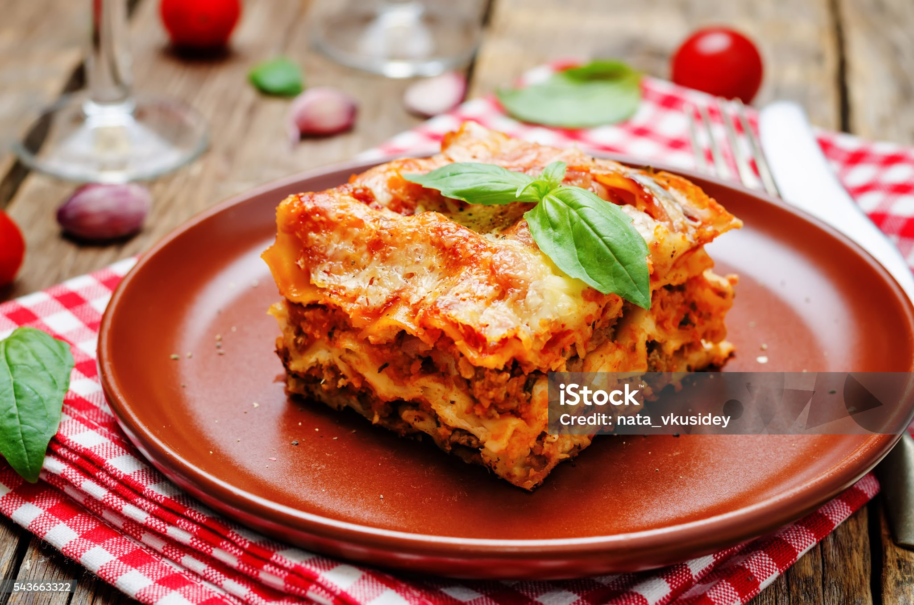

Lasagna

Description
Lasagna is a classic Italian dish made with layers of wide, flat pasta sheets.
Between the pasta goes a rich meat sauce (sometimes vegetarian variations exist),
creamy ricotta cheese, and melty mozzarella cheese.
The whole thing is baked until bubbly and golden brown,
creating a delicious combination of textures and flavors.
It's a hearty and satisfying dish, perfect for a comforting meal.
Ingredients
- Lasagna noodles (uncooked)
- Meat sauce (ground beef, sausage, or vegetarian option)
- Tomato sauce
- Ricotta cheese
- Mozzarella cheese
- Parmesan cheese (optional)
Steps
- Cook lasagna noodles according to package directions.
- Prepare meat sauce (brown meat, add vegetables, simmer with tomato sauce).
- Mix ricotta cheese with herbs and seasonings (optional: egg).
- Layer sauce, noodles, ricotta mixture, and mozzarella cheese in a baking dish.
- Repeat layers until dish is full, ending with cheese.
- Bake covered at first, then uncovered until bubbly and golden brown.
Let cool slightly before serving.